ジブンのキセキ用PowerPoint裏ネタ&元ネタ&制作秘話集
ジブンのキセキ用PowerPoint裏ネタ&元ネタ&制作秘話集
もう一度見たい方は以下の動画(93.5MB)からどうぞ！
4K動画になってるので、モバイルデータでの再生はおすすめしません!!
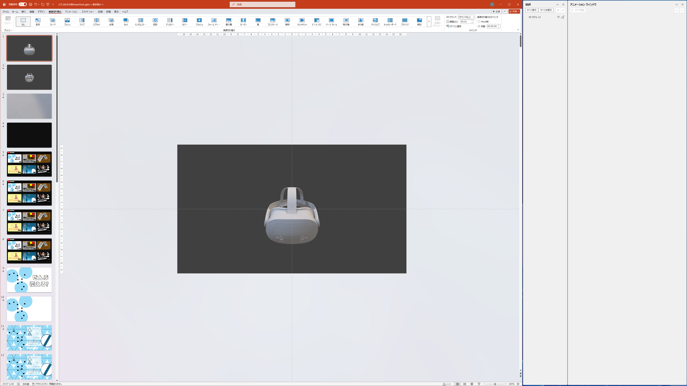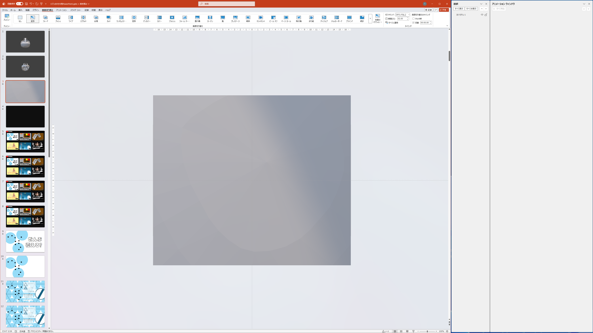
1. VR
元ネタ:Meta Quest 3s
画面中央に3Dオブジェクトを配置し、画面切り替え効果の｢変形｣を用いて滑らかに動く(回転など)ようにしている。
改めて、｢変形｣が万能すぎる。
3.数学系
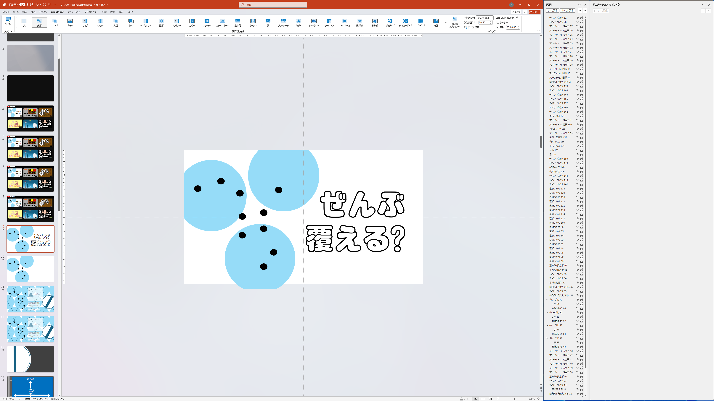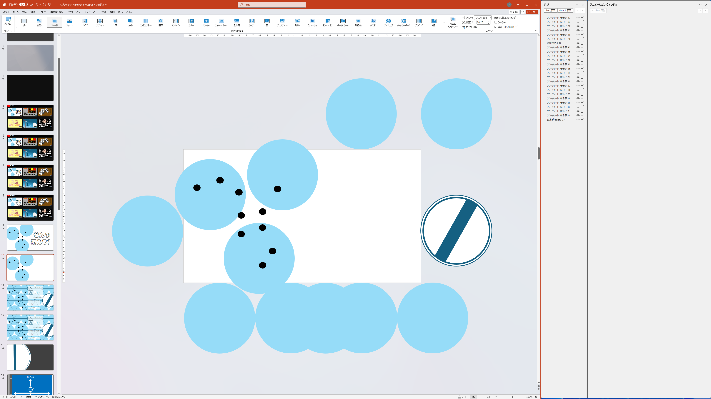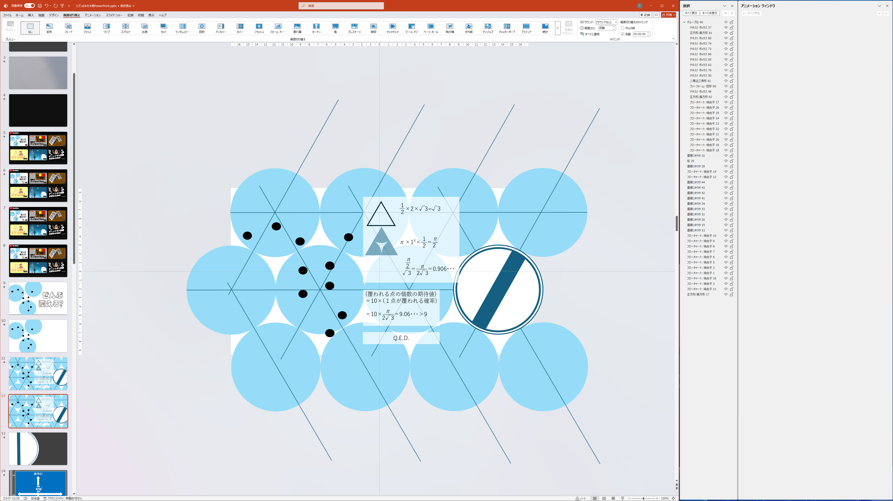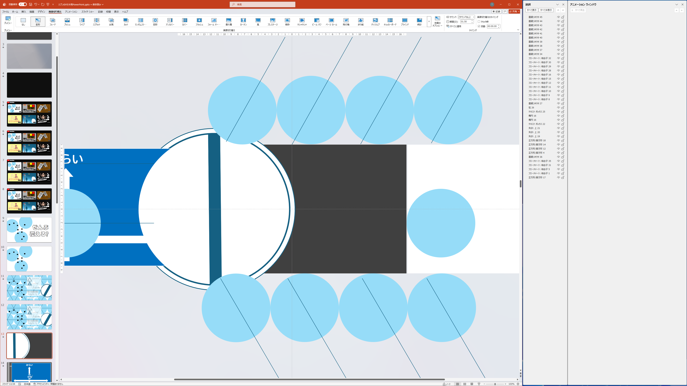
元ネタ:
①2.の章の元ネタ①
②道路標識｢終わり｣
前の画面から繋がるように、前画面の左上のサムネを画面全体を覆うように大きくしたものを置く。(豆知識！複数のオブジェクトをまとめて拡大縮小する際は一回グループ化してから拡大縮小すると全体の形を保ったまま拡大縮小できます！豆知識以上。)
同じようなスライドが二枚ずつ作られてるのは、｢変形｣を使う上での都合なので、深い意味はない。レイヤーを入れ替えたりしたいけど変形中にレイヤーが変わると見た目に違和感が生まれるので、画面切り替え効果｢なし｣でレイヤーを切り替えてから｢変形｣するようにしている。
また、画面外にオブジェクトが増えるだけの時も画面切り替え効果は｢なし｣にしている。無駄に時間かけて切り替える必要ないのでね。
最後にこのセクションで使ったオブジェクトたちを滑らかに画面外に退場させて、次のセクションに繋げる準備をしている。
4.青看&阪急(?)
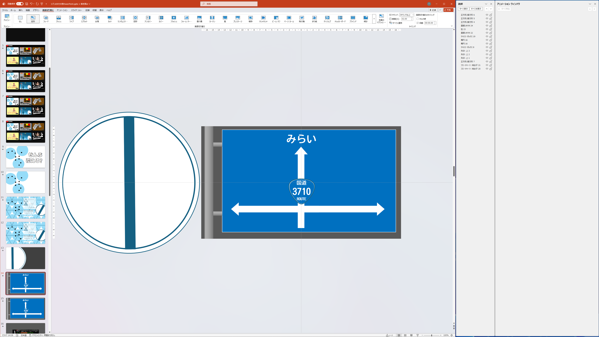

元ネタ:
①方面及び方向の予告
②阪急電車
③湊(自分の下の名前)(3710が語呂合わせで｢みなと｣と読める)
前のスライドから｢変形｣を使って滑らかに切り替えて、青看を真ん中に持ってくる。
阪急電車もどきをスライドの画面外左側に置いておき、アニメーション｢アニメーションの軌跡｣を使って右に移動させる。その際、｢滑らかに開始｣の値を0にすることで｢変形｣と差別化を図った。
5.電光掲示板
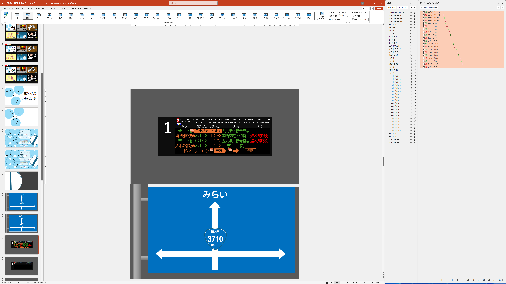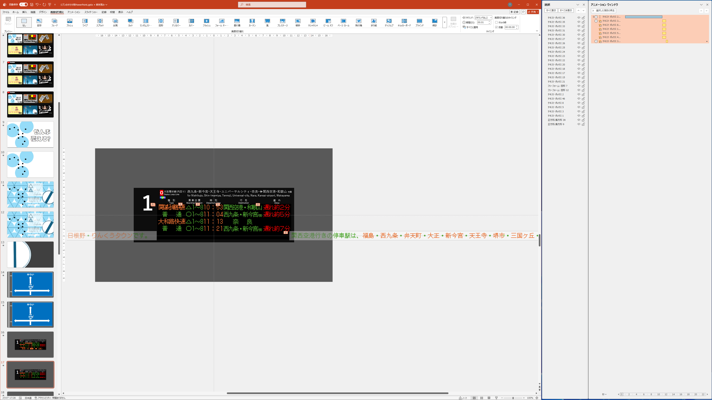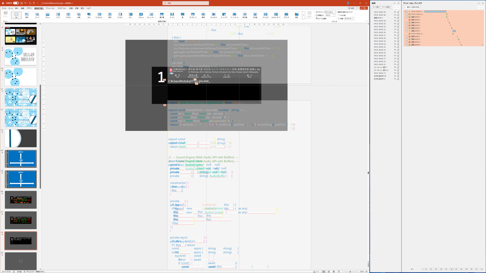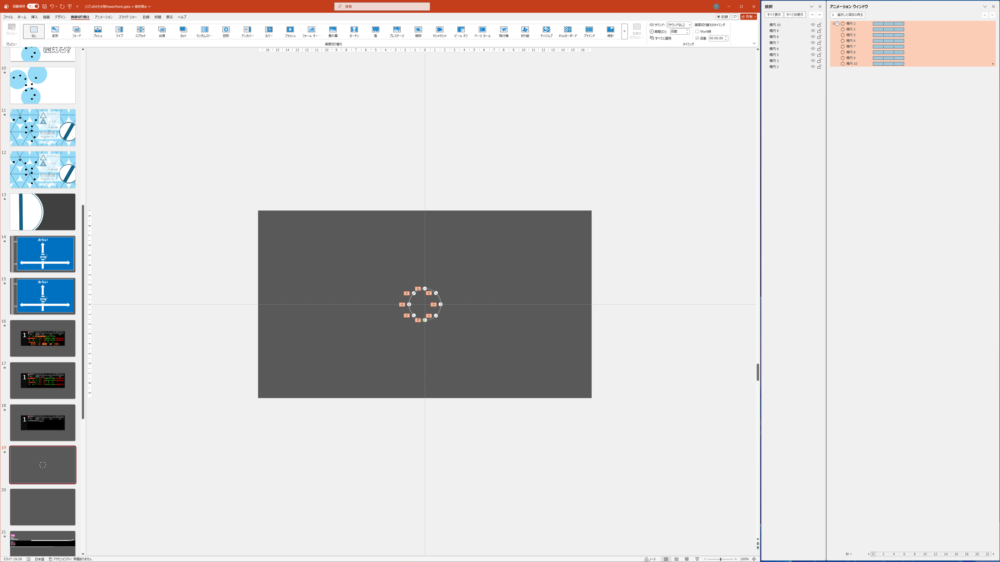
元ネタ:
①JR西日本列車運行管理システム連動の電光掲示板
大阪駅大阪環状線1番乗り場。参考は、途中が平らになるエスカレーターの降り口先にある電光掲示板。
(本来はSUNTRASも再現したかったけど時間足りなかった...(´;ω;｀)ｼｮﾎﾞﾝ)
②プログラミングとコマンドプロンプト
③Windows10のロード中画面のグルグル
とりあえず表示に必要な要素は全て作成して起き、必要なタイミングになったらアニメーションで表示すればいい。それまでは消えてもらう。
用意したオブジェクトを順番に表示(実際には点滅だから表示とクリアを何度か繰り返す)していって、用が済んだらクリアして消しておく。各オブジェクトに対して同じことの繰り返し。
停車駅案内のスクロールでは4.章で阪急電車に対して使ったのと同じ｢アニメーションの軌跡｣を使う。これの設定から｢滑らかに開始｣と｢滑らかに終了｣をどちらも0に設定することで等速直線運動させることができる。また、スクロールの際、電光掲示板の外に文字がはみ出ていては出来が悪いので、電光掲示版の枠より下で電光掲示板の背景より上のレイヤーでかつスライドの背景より下のレイヤーにしなければならない。ただ普通にはそんなこと実現しようがないので、実はスライドの背景と同じ色のロの字型の図形を置いて対応している。
プログラミングが上にスクロールしていくのは電光掲示板の横スクロールと全く同じ原理。コマンドプロンプトの文字を入力してる風の演出は、アニメーションの｢表示｣で一文字ずつ表示するオプションを有効にして、直線をそれに合うように｢アニメーションの奇跡｣で動かしている。ちなみに、ここで使っているフォントはWindowsのシステムフォントであるYu Gothic UIである。
読み込み画面は次の画面に繋げる上手い方法が思いつかなかったからとりあえず入れてみたら意外と上手くできたからそのまま採用。●を8個置き｢アニメーションの軌跡｣で円運動をするように設定した後、それぞれの点で｢滑らかに開始｣と｢滑らかに終了｣を0.2秒ずつずらしていってうまいことなるように設定している。(言語化難しい...)
6.osu!taiko
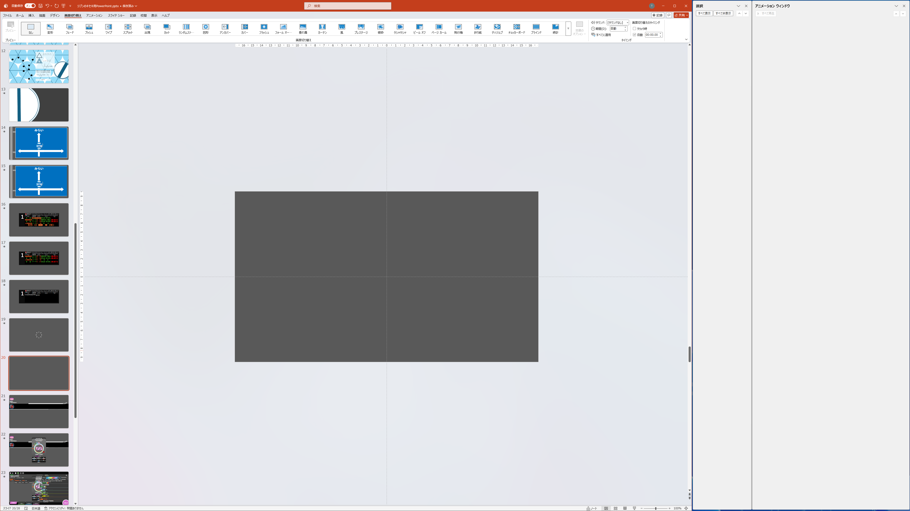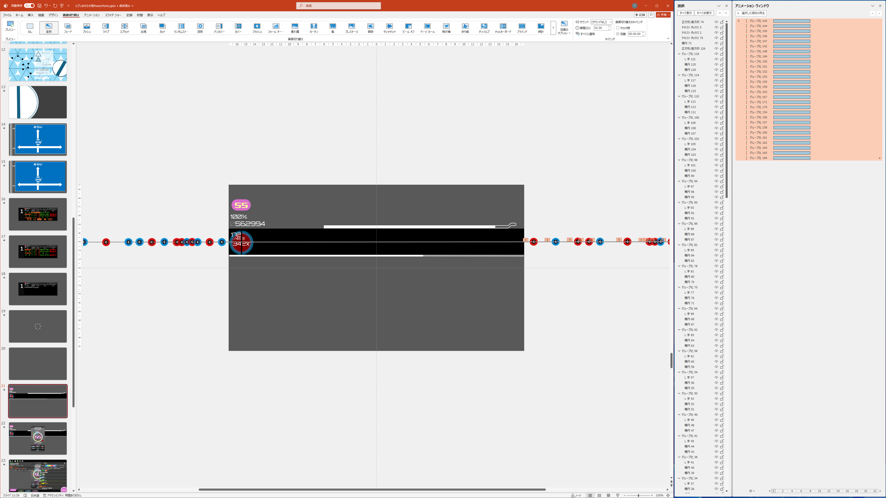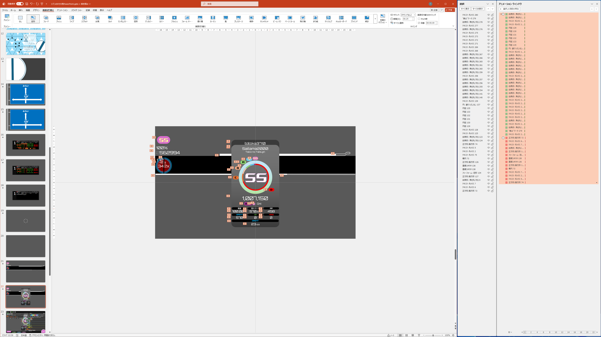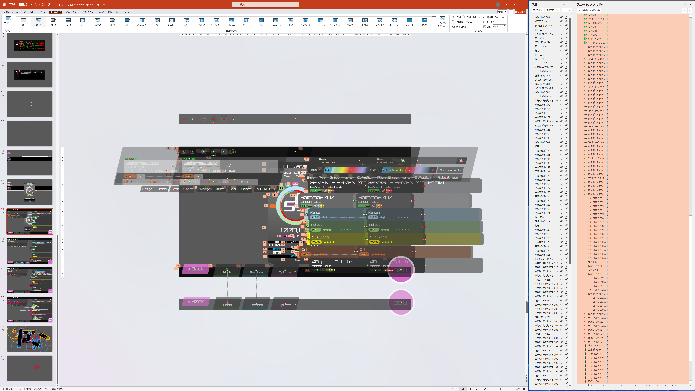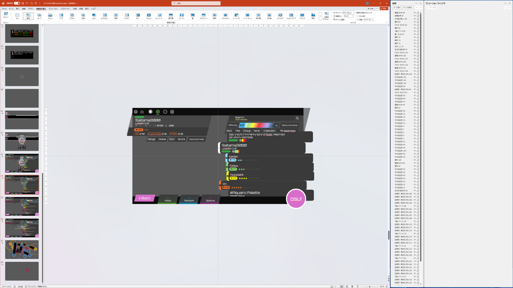
元ネタ:osu!taiko
｢変形｣が前のスライドの●とノーツの●を同じオブジェクトとして捉えてしまって変なことになったので、間に空白ほスライドを一枚置いている。このように、｢変形｣は万能でありながら扱いが少し難しい子でもある。ただ慣れればどうってことはない。
とりあえずパワポ標準の図形でosu!taikoのプレイ画面を再現する。ちなみにノーツ1つあたり3つのオブジェクトを組み合わせて作成しているので、再生時かなり重いです。
ノーツ全てに｢アニメーションの奇跡｣を適用して左に流れていくようにする。この際も｢滑らかに開始｣と｢滑らかに終了｣を0にしないと流れてる途中でスピードが変わる気持ち悪い音ゲーと化すので気を付ける。なお、プレイ画面のノーツ以外の部分の動きは作るのが大変というか、ホンマにパワポで実現できんのか？ってレベルだったので、実験だけして諦めた。判定枠でノーツが跳ねる演出を実装していないのも同じ理由。
リザルト表示はosu!のシステムを忠実に再現するために、0.2秒でリザルトがフェードで表示されて0.1秒後にプレイ画面が0.2秒かけてフェードアウトするようにしている。微妙な時間のズレは画面切り替えでは実現しようがないので、アニメーションで対応している。ただでさえオブジェクト数が多いのに1つにつき3~5アニメーション付いているのでこれまた激重。
同じようにリザルトから選曲画面への切り替えも0.2秒でリザルトをフェードアウトさせ0.1秒後に選曲画面を0.2秒かけて表示されるようにしている。選曲画面が表示される際、曲リストは右からなどと、場所によってとバラバラの動きをするのと、ビュンっと動いてほしいなどの細かい要望も併せて、｢滑らかに開始｣と｢滑らかに終了｣を0にした｢アニメーションの軌跡｣をつけている。標準で｢スライドイン｣という効果もあるが、細かい調整ができないなどのため今回は使用していない。また、ただ｢アニメーションの軌跡｣で動かすだけでなく、同時に｢フェードイン｣を適用することで、｢アニメーションの軌跡｣前の状態で完全に画面外に置かなくてもいいようにしている。
このまま次の章に進んでもいいのだが、さすがにアニメーションだらけのスライドで次に進むと、画面切り替えの際に微妙にオブジェクトの位置がズレたりして見てて違和感が生まれる原因になるので、一旦きれいさっぱりアニメーションが終わった後のスライドを別で用意する。
なお、今回はなるべく｢グループ化｣はしないようにしている。というのも、人間の見た目には同じなのに｢グループ化｣されているものとされていないものでは異なるオブジェクトとして認識されるので非常に扱いずらくなってしまうからだ。

↑4枚目の画像のスライドをアニメーションを表示するのではなくオブジェクトを全選択した状態だけど、これ一つ一つに3つ以上アニメーション効果がかかってるからそりゃ重くなるよな。
説明し忘れていたが、半透明のオブジェクトは｢アニメーションの軌跡｣の移動後を位置を表している。
7.osu!
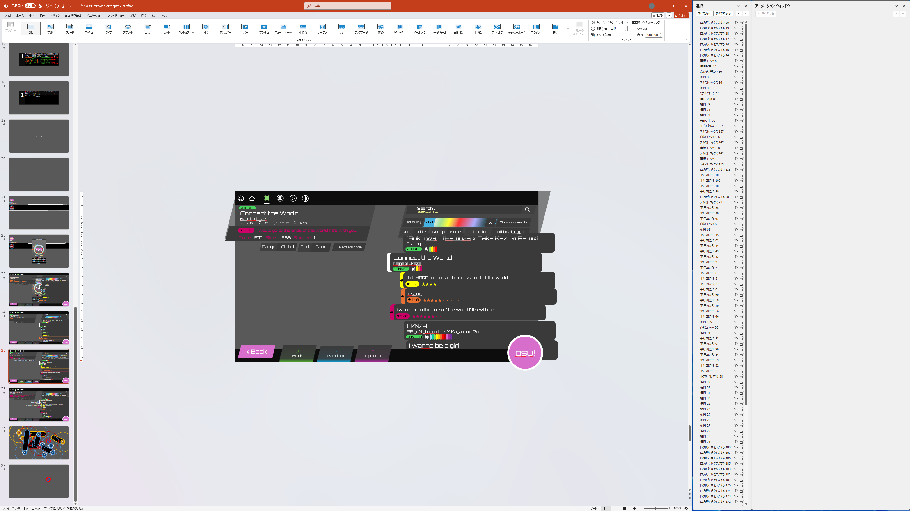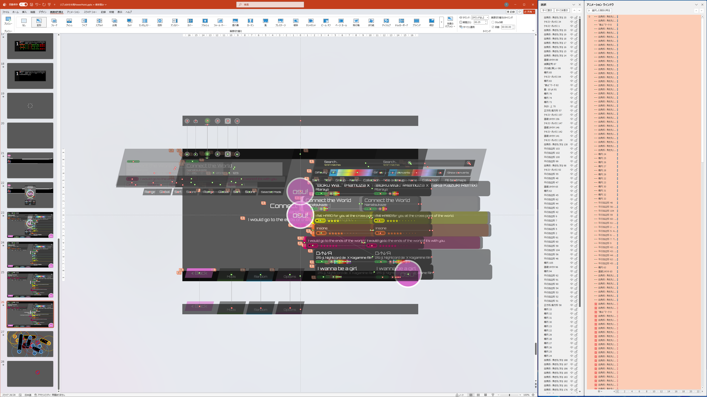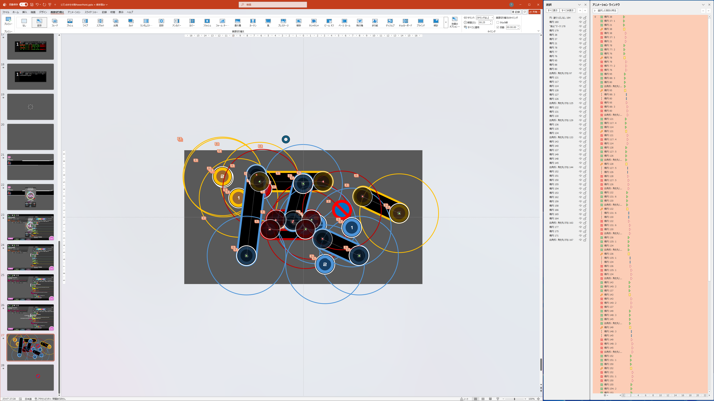
元ネタ:osu!
osu!taikoの選曲画面からosu!の選曲画面への切り替えは切り替え効果｢なし｣にしている。滑らかに色が変わったりされても違和感でしかないのでね。
まずはosu!taikoの2枚目と同じように接続用にアニメーションゼロのスライドを1枚はさんでから本スライドに移行する。
とはいってもやってることはosu!taikoの選曲画面とほぼ同じで、違うことといえば、実際の画面の動きを忠実に再現するために少しこだわったことくらい。
曲リストやタイトルが消えると同時に右下のosu!ボタンが真ん中に移動(その際にサイズも半分になっている)し、一旦止まって少し上にズレる。上にズレるときに曲のタイトルとかを表示して、少し経ったら小さくなりながらフェードアウト。このタイミングでヘッダー・フッターも消える。これはマジで自信ある再現度。
今回は全てのオブジェクトが非表示になるので接続用のスライドは挟まずいきなりプレイ画面に移行。
osu!では再現性を高めるため、1ノーツを作るのに●を二重にしたりして合計3～4オブジェクトを使ってる。結果このスライドも重い。
｢拡大･縮小｣のアニメーションで0.5秒かけて大きい円を50%に小さくして、拡大縮小のアニメーション開始より0.5秒遅れて二重の●を非表示にする。っていう処理を何個もコピペして繰り返してる。ただ、一つの動作が終わってから次の動作ってわけじゃない(何個かの円が同時に小さくなる)から、全部同時のアニメーションって扱いで、アニメーションの遅延を0.05秒単位で微調整してそれっぽくしている。
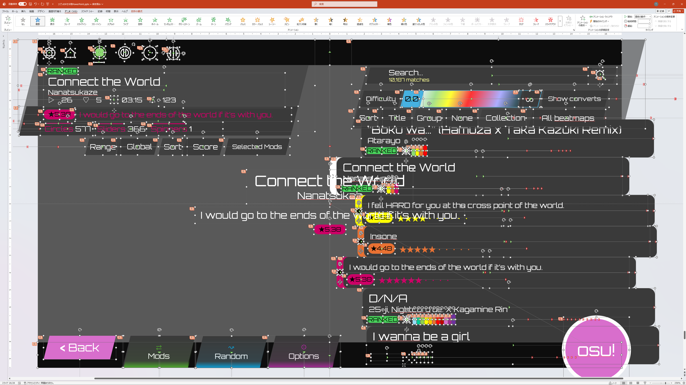
↑2枚目の画像のスライドのオブジェクトを全選択した状態だけど、このゴチャゴチャ感、見てるだけでクセになるぜｪ。
8.駐車禁止
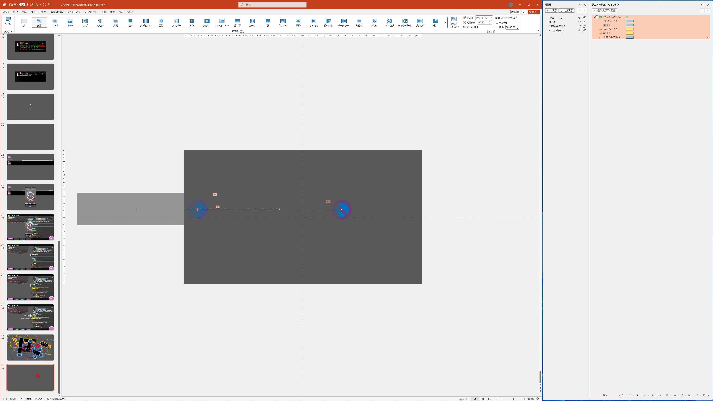
元ネタ:道路標識｢駐車禁止｣(駐車余地のつもりではないっ)
osu!の最後のノーツとして出てきた駐車禁止の標識。これが左にスライドすると文字が現れる。何かで隠れてるわけでもないのに、上をオブジェクトが通り過ぎて文字が現れる、そんなことできるのか！？⇒できません。
どうやってるかってのは、駐車禁止より左側の部分をスライドの背景で塗りつぶした長方形で覆ってる、ただそれだけ。駐車禁止が左にスライドするのに合わせて長方形も動けば、駐車禁止が上を通り過ぎて文字が現れたように見えるってわけ。マジックもそうだけどタネがわかると｢なんだ、それだけのことだったのか｣ってなるよね。
こんなサイトを最後まで読んでくださった方へ
最後まで読んでいただきありがとうございます。少しばかりは参考になる内容はあったでしょうか。ここで手に入れた手法や発想があなたのスライド作成能力の一助となれば幸いです。
ちなみに、このサイトはジブンのキセキ発表会の前日(もはや当日)の午前2時半過ぎまで作成にかかりました。(作り始めたのが発表会前日の23時なので当たり前といえば当たり前ですが。)デザインがシンプルなのはそこまで力を入れてる時間がなかったからです。時間があればJavaScriptとかも組んでゴリゴリのサイトを作りたかったんですけどね。昼寝したので眠くはないですが、早く寝ないと明日の授業中起きてられる自信がありません。なのであとがきも程ほどに終えたいと思います。
さいごに、ここまで読んでくださったあなたならきっと欲しがるであろう、PowerPointのファイル(pptx形式)はこちらからダウンロードできますので、よかったらぜひご自身で再生してみて、改めてこいつヤベェなと思っていただけると私もうれしいです。インターネットへの投稿や再配布･改変はご遠慮ください。